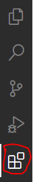
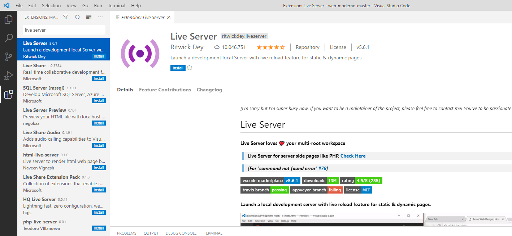

Analisando os assuntos:
 Live Server
Fala, Pessoal! Beleza?
Temos recebido muitas mensagens de alunos enfrentando problemas ao utilizar o “http-server”  segue o Link curso de Web Moderno com Javascript nesse caso estou aprendendo um
pouco mais sobre "HMTL","CSS", entre outras ferramentas para desenvolver um excelente Web Site....

Do dia 13 de julho de 2021,das 21:33:00 h mais ou menos até o dia,o professor explicar os assuntos;
# 1ª aula {Anatomia do HTML} são 18 minutos;
# 2ª aula {Anatomia de uma Página} são 16 minutos;
# 3ª aula {Um pouco de CSS} são 24 minutos;
# 4ª aula {Estruturando os Exercícios} são 18 minutos,
observação Quarta-Feira,14/07/2021 das 10:29:00 as 11:30:00 h +| -
Seja na hora de inicializar, atualizar páginas ou até mesmo aos escolher portas, o “http-server” tem se mostrado problemático e confuso.
Sugerimos então o uso do “Live Server”, que assim como o http-server, simula um servidor local para páginas dinâmicas e estáticas.
O Live Server possui várias vantagens e a principal delas é que é bem mais estável e muito mais simples de usar.
Para baixá-lo, na barra lateral esquerda do seu VS Code clique no seguinte botão:
Em seguida, digite “Live Server” na barra de pesquisa e clique em install, como na imagem abaixo: